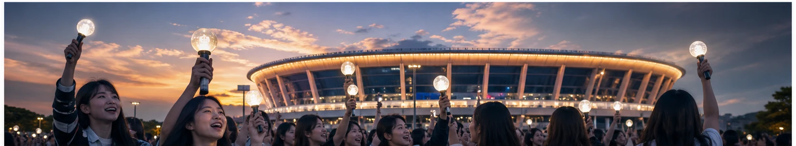
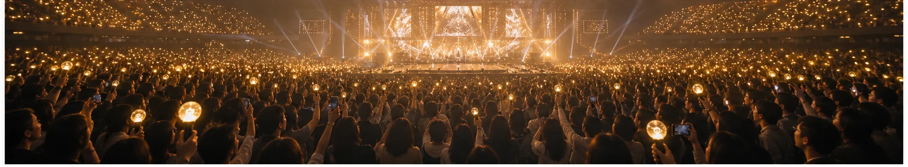

티켓 한 장에 모인 마음, 임영웅 스타디움 콘서트 예매 열기
스타디움 콘서트 예매가 시작된다는 소식만으로 온라인이 들썩였다. 네이버 뉴스 검색에서도 예매 시간, 준비 방법, 성공 후기와 가족을 위한 ‘효도 티켓’ 이야기가 한꺼번에 올라오며 관심이 집중됐다. 단순히 인기 가수의 공연이 열린다는 차원을 넘어, 한 번의 클릭에 오랫동안 기다린 마음과 가족의 추억이 함께 걸린 이벤트가 된 모습이다.
이번 열기의 중심에는 세대를 가로지르는 팬덤이 있다. 부모가 좋아하는 가수를 위해 자녀가 예매에 나서고, 반대로 자녀와 함께 공연장을 찾으려는 중장년 팬도 많다. 예능 프로그램이나 개인 인증 글을 통해 예매 성공담이 공유되면서 ‘표를 구하는 과정’ 자체가 하나의 이야기로 소비된다. 공연을 보기 전부터 팬들이 같은 긴장과 기대를 나누는 셈이다.
스타디움 공연은 좌석 수가 많지만 수요 역시 압도적이다. 예매 전에는 회원 정보와 본인 인증, 결제 수단, 팝업 차단 여부를 미리 점검하는 것이 기본이다. 여러 기기를 무작정 동시에 켜기보다 공식 안내가 허용하는 범위에서 안정적인 환경을 고르는 편이 낫다. 좌석 배치도를 먼저 확인하고 1순위와 대체 구역을 정해 두면 선택 화면에서 망설이는 시간을 줄일 수 있다.
암표와 사기 거래에 대한 경계도 필요하다. 급한 마음에 개인 간 거래로 넘어가면 허위 좌석, 위조 내역, 과도한 웃돈 피해를 볼 수 있다. 공식 예매처의 취소표 일정과 추가 오픈 공지를 꾸준히 확인하는 것이 가장 안전하다. 출처가 불분명한 링크로 로그인하거나 인증번호를 넘겨주는 행동은 피해야 한다.
공연의 진짜 가치는 좌석 등급만으로 결정되지 않는다. 큰 무대를 채우는 노래, 관객의 응원, 함께 간 사람과의 시간이 합쳐져 오래 남는 기억이 된다. 예매에 성공했다면 이동 동선과 귀가 교통, 날씨, 물품 규정을 미리 살피자. 실패했더라도 재판매 유혹보다 공식 취소표를 기다리는 차분함이 필요하다.

예매 당일에는 시작 시각보다 여유 있게 접속하되 새로고침을 지나치게 반복하지 않는 것이 좋다. 대기 번호가 보이면 화면을 닫지 말고, 결제 단계에서 사용할 카드나 간편결제의 한도도 확인해 두자. 동행자와 좌석을 고를 때는 무대와의 거리뿐 아니라 계단, 출입구, 화장실 위치도 고려해야 한다. 부모님과 함께라면 장시간 대기와 귀가 혼잡을 줄일 방법을 먼저 찾는 편이 만족도가 높다. 공연 전 공식 채널에서 입장 가능 시간과 반입 금지 물품, 현장 수령 기준이 바뀌지 않았는지 다시 확인하자. 온라인 커뮤니티의 경험담은 참고가 되지만 이번 공연의 규정과 다를 수 있다. 무엇보다 예매 성공을 자랑하는 과정에서 주문 번호나 이름, 전화번호가 보이는 화면을 올리지 않아야 한다. 작은 준비가 티켓을 지키고 공연 당일의 불필요한 긴장을 줄여 준다.
화제의 속도가 빠를수록 정보의 날짜와 출처를 확인하는 습관이 중요하다. 검색 결과의 제목만 보지 말고 공식 발표와 원문을 함께 살피며, 예고 단계의 내용과 확정된 사실을 구분해야 한다. 개인의 짧은 후기나 영상은 현장감을 주지만 전체 상황을 대표하지는 않는다. 서로 다른 관점을 비교하고 새 공지가 나오면 판단을 업데이트하자. 관심을 표현할 때도 당사자의 개인정보와 초상권, 아직 공개되지 않은 내용을 존중해야 한다. 빠르게 공유하는 것보다 정확하고 배려 있게 이해하는 태도가 결국 더 좋은 팬 문화와 공론장을 만든다.
한편 검색량이 높다는 사실이 곧 가치나 완성도를 뜻하는 것은 아니다. 화제가 시작된 배경과 사람들이 반응한 이유를 차분히 나누어 보면 유행을 더 입체적으로 읽을 수 있다. 서로 다른 취향과 경험을 존중하고, 확인되지 않은 내용을 단정하거나 과장된 표현으로 갈등을 키우지 않는 것도 중요하다. 오늘의 인기 키워드를 잠깐 소비하는 데서 그치지 않고 우리 생활과 문화에 어떤 변화를 남기는지 지켜볼 때 이야기는 더 풍성해진다.
이번 예매 열풍은 팬덤 문화가 얼마나 생활 가까이 들어왔는지 보여준다. 누군가에게 티켓은 단순한 입장권이 아니라 고마움을 전하는 선물이며, 한동안 반복해서 꺼내 볼 추억의 시작이다. 뜨거운 경쟁 속에서도 안전한 거래와 서로를 배려하는 관람 문화가 함께 자리 잡을 때, 스타디움의 빛은 공연 당일을 넘어 더 오래 이어질 것이다.